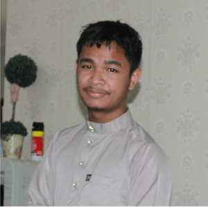

1 / 4
My dad & mom
2 / 4

Bella, mom, & me
3 / 4
bella
3 / 4
Danny, dad, & Zul
To me, family means: I will never be truly alone, and I'll always have a place to call home. I have people who know the real me, And they still love me even if we disagree. Though sometimes we may fuss and fight, In the end everything will be all right Because families forgive each other no matter what. That's just the way it is, no ifs, ands, or buts. Family stays true all the way down the line, And I couldn't live without these people of mine. Yes, this is what family means to me, If this rings true for you, then I'm sure you agree.
| Photo | Name | Description |
|---|---|---|
| Sarbini bin Karim | Named Sarbini Bin Karim, he was born in 1974 in a village located in Sebuyau, Sarawak. He is the eldest child of 5 siblings. After he grew up as a teenager, he traveled to the peninsula to get a job. He is a brother and father who is very responsible for his family. He had served as a member of the navy for 12 years and then he got an offer to work as a Malaysian maritime member. | |
| Mariah binti Ibrahim | The name Mariah binti Ibrahim was born in 1979 in a village located in Pulau Pangkor, Perak. He is the fourth child of 5 siblings. After growing up as a teenager, he worked various types of work such as trading, clerk and others. She also got offers to be a model and stewardess but her ambitions were thwarted by her father. His father was a very pious man who did not allow his son to undress for a job. After getting married, the mother became a full -fledged housewife to this day. | |
| Fatin Munira binti Sarbini | I was born on 10 May 2000 at Hospital Angkatan Tentera, Lumut, Perak. My favorite food is sushi, the famous food from Japan. And my favorite drinks are usually milo, green tea and tea c special. My hobbies are watching Netflix, listening to my fav songs, and dancing if I have free time. I love to travel; in my childhood, I only had the opportunity to travel around Malaysia only and I aspire to travel abroad in the future if I have rezeki and good carrier. I once dreamed to become a military officer to continue my father legacy and also interested in opening a business with my friend. | |
|  | Muhammad Zulfikrie bin Sarbini | Muhammad Zulfikrie bin Sarbini was born in small island at Pulau Pangkor, Perak. He is the 2nd child of 4 siblings. He loves to palying Pubg in everyday and all night. This year he will occupy in SPM, and i hope he will get the best result in sha allah. But to be honest he doesnot study at all, i dont know what on his mind. His dad getting tired to advice him everyday because he pretend like nothing will happen to his life. |
| Muhammad Danial bin Sarbini | Muhammad Danial is a very genius boy, when he was 6 years old he knew how to solve multiplication questions, he was also very good in english subjects. He once aspired to be a fighter jet pilot when he was 7 years old. His whole family is very proud of his achievement. After he moved from Sabah, he started playing games and did not focus on learning. His test results also all deteriorated except for the english subject. His family is very disappointed and still hopes he will be a fighter jet pilot one day. | |
| Fatin Nabila binti Sarbini | Fatin Nabila was born in 2011 and she is the youngest of 4 siblings. She was a very cute little girl and had white skin. Nabila is happy to make friends with any person she has just met, and of course she is very friendly, her mouth never stops talking. She loves to cook and helps mom in the kitchen to prepare meals for her family. In addition, he also loves baking. A variety of cake dishes she makes for us. |